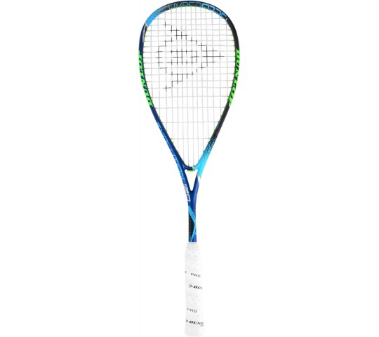

Dunlop Hyperfibre+ Evolution Pro

Краткое описание товара
The Hyperfibre + Evolution Pro is the most advanced squash racket from Dunlop. The most innovative techniques have been used to develop this racket.
Характеристики товара
- Construction Premium Graphite & Hyperfibre +
- Weight Frame: 120g
- Blade size: 490 cm2
- Blade shape: Hybrid
- Balance: Extra Head Light
- String pattern: 14×18
- Player: Nick Matthew
- Color: SKU773252
Подробное описание товара
The Hyperfibre + Evolution Pro is the most advanced squash racket from Dunlop. The most innovative techniques have been used to develop this racket.
Benefits:
- Hyperfibre + for more stability, control and power
- Aeroprofile cuts sharper through the air
- Parallel string increased blade for more control and power
- Aeroskin ultra fast air flow
- Glide polymer reduces friction, increases strength and durability
- Hybrid Cross section increases power and stability
- Tapered Shaft increases the resilience and rigidity of the racket
- This racket is the choice of Squash professional Nick Mathem!
Похожие товары:
Dunlop Hyperfibre+ Evolution Pro
Victor IP 10 Squashracket
Все права защищены © 2020